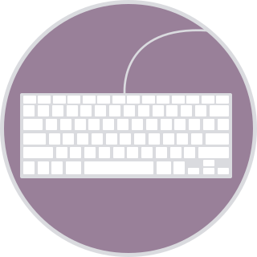

Tutorial
Tutorial
- Sass stands for Syntactically Awesome Stylesheet
- Sass is an extension to CSS
- Sass is a CSS pre-processor
- Sass is completely compatible with all versions of CSS
- Sass reduces repetition of CSS and therefore saves time
- Sass was designed by Hampton Catlin and developed by Natalie Weizenbaum in 2006
- Sass is free to download and use
Stylesheets are getting larger, more complex, and harder to maintain. This is where a CSS pre-processor can help. Sass lets you use features that do not exist in CSS, like variables, nested rules, mixins, imports, inheritance, built-in functions, and other stuff.
A browser does not understand Sass code. Therefore, you will need a Sass pre-processor to convert Sass code into standard CSS. This process is called transpiling. So, you need to give a transpiler (some kind of program) some Sass code and then get some CSS code back.
- Sass String Functions
- Sass Numeric Functions
- Sass List Functions
- Sass Map Functions
- Sass Selector Functions
- Sass Introspection Functions
- Sass Color Functions
- Operating system - Sass is platform independent
- Browser support - Sass works in Edge/IE (from IE 8), Firefox, Chrome, Safari, Opera
- Programming language - Sass is based on Ruby
Read more about Sass at the official Sass web site: https://sass-lang.com/
There are several ways to install Sass in your system. There are many
applications
that will get you up and running with Sass in a few minutes for Mac, Windows, and Linux.
Some of these are free, but some are paid apps.
Applications

Command Line
- sass source/stylesheets/index.scss build/stylesheets/index.css
- npm install -g sass
- choco install sass
- brew install sass/sass/sass
You can read more about them here: sass-lang.com/install
Variables are a way to store information that you can re-use later.
- strings
- numbers
- colors
- booleans
- lists
- nulls
$variablename: value;
The default behavior for variable scope can be overridden by using the
!global switch. !global indicates that a variable is global,
which
means that it is accessible on all levels
@include keyword.
Sass lets you nest CSS selectors in the same way as HTML
Look at an example of some Sass code for a site's navigation:
SCSS Syntax:
nav {
ul {
margin: 0;
padding: 0;
list-style: none;
}
li {
display: inline-block;
}
a {
display: block;
padding: 6px 12px;
text-decoration: none;
}
}
CSS Output:
nav ul {
margin: 0;
padding: 0;
list-style: none;
}
nav li {
display: inline-block;
}
nav a {
display: block;
padding: 6px 12px;
text-decoration: none;
}
Notice that in Sass, the ul, li, and a
selectors are nested inside the nav selector.
SCSS Syntax:
font: {
family: Helvetica, sans-serif;
size: 18px;
weight: bold;
}
text: {
align: center;
transform: lowercase;
overflow: hidden;
}
CSS Output:
font-family: Helvetica, sans-serif; font-size: 18px; font-weight: bold; text-align: center; text-transform: lowercase; text-overflow: hidden;
Just like CSS, Sass also supports the @import directive.
The @import directive allows you to include the content of one file in
another.
The CSS @import directive has a major drawback due to performance issues;
it
creates an extra HTTP request each time you call it. However, the Sass
@import
directive includes the file in the CSS; so no extra HTTP call is required at runtime!
@import filename;
Tip: You do not need to specify a file extension, Sass automatically assumes that
you
mean a .sass or .scss file. You can also import CSS files. The @import
directive imports the file and any variables or mixins defined in the imported file can
then
be used in the main file
@import "variables"; @import "colors"; @import "reset";By default, Sass transpiles all the .scss files directly. However, when you want
to
import a file, you do not need the file to be transpiled directly.
Sass has a mechanism for this: If you start the filename with an underscore, Sass will
not
transpile it. Files named this way are called partials in Sass.
So, a partial Sass file is named with a leading underscore:
_filename;
The @mixin directive lets you create CSS code that is to be reused
throughout the website.
The @include directive is created to let you use
(include) the mixin.
A mixin is defined with the @mixin directive.
SCSS @mixin Syntax:
@mixin name {
property: value;
property: value;
property: value;
...
}
SCSS Syntax:
@mixin important-text {
color: red;
font-size: 25px;
font-weight: bold;
border: 1px solid blue;
}
@mixin important-text { } and
@mixin
important_text { } are considered as the same mixin!
The @include directive is used to include a mixin.
SCSS @include mixin Syntax:
selector {
@include: mixin-name;
}
SCSS Syntax:
.danger {
@include important-text;
}
The @extend directive lets you share a set of CSS properties from
one
selector to another
The @extend directive is useful if you have almost identically styled
elements
that only differ in some small details
The following Sass example first creates a basic style for buttons (this style will be
used
for most buttons). Then, we create one style for a "Report" button and one style for a
"Submit" button. Both "Report" and "Submit" button inherit all the CSS properties from
the
.button-basic class, through the @extend directive. In addition, they have
their own colors defined
SCSS Syntax:
.button-basic {
border: none;
padding: 15px 30px;
text-align: center;
font-size: 16px;
cursor: pointer;
}
.button-report {
@extend .button-basic;
background-color: red;
}
.button-submit {
@extend .button-basic;
background-color: green;
color: white;
}
CSS Output:
.button-basic,
.button-report,
.button-submit {
border: none;
padding: 15px 30px;
text-align: center;
font-size: 16px;
cursor: pointer;
}
.button-report {
background-color: red;
}
.button-submit {
background-color: green;
color: white;
}
By using the @extend directive, you do not need to specify several classes
for
an element in your HTML code, like this:
<button
class="button-basic button-report"> Report
this</button>
You just need to specify .button-report to get both sets of styles.
The @extend directive helps keep your Sass code very DRY.